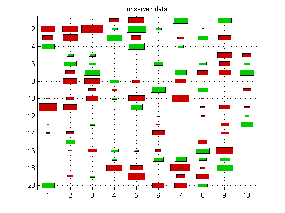
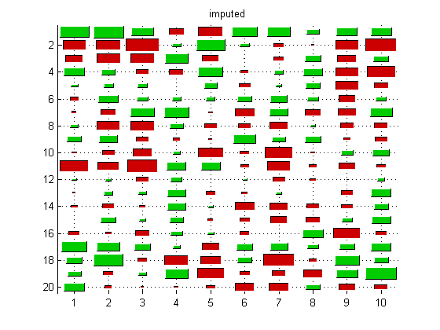
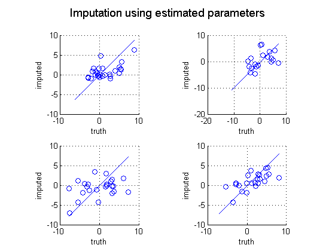
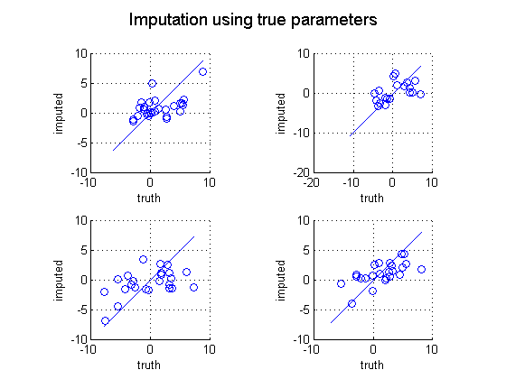
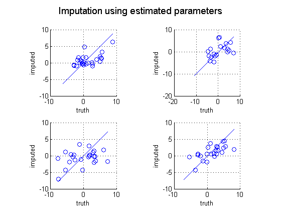
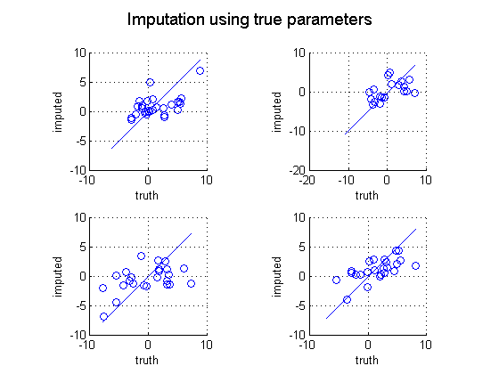

Gauss Imputation Demo
Contents
% This file is from pmtk3.googlecode.com function gaussImputationDemoColorHintonDiag()
setSeed(1); d = 10; mu = randn(d,1); Sigma = randpd(d); pcMissing = 0.3; % Training data is missing data at random [XfullTrain, XmissTrain] = mkData(mu, Sigma, 100, true, pcMissing); % Test data omits 'stripe' rather than at random, and is smaller. % This restriction is only needed for the Hinton visualization. %[Xfull, Xmiss, Xhid] = mkData(mu, Sigma, 5, false, pcMissing); pcMissing = 0.5; [Xfull, Xmiss, Xhid] = mkData(mu, Sigma, 50, true, pcMissing); [model, LLtrace] = gaussMissingFitEm(XmissTrain, 'verbose', false); [XimputeEM, Vem] = gaussImpute(model, Xmiss); % oracle - similar to training on a large fully observed training set trueModel = struct('mu', mu, 'Sigma', Sigma); [XimputeTruth, Vtruth] = gaussImpute(trueModel, Xmiss);
Plotting
figure; Xmiss0 = Xmiss; Xmiss0(isnan(Xmiss0))=0; ndx = 1:20; hintonDiagram(Xmiss0(ndx,:)); title('observed data'); printPmtkFigure('mvnImputeObs'); figure; hintonDiagram(XimputeEM(ndx,:)); title('imputed'); printPmtkFigure('mvnImputeImpute'); figure; hintonDiagram(Xfull(ndx,:)); title('truth'); printPmtkFigure('mvnImputeTruth'); figure; nr = 2; nc = 2; for j=1:(nr*nc) subplot(nr, nc, j); miss = find(isnan(Xmiss(:,j))); scatter(Xfull(miss, j), XimputeEM(miss,j)) xlabel('truth'); ylabel('imputed'); mini = min(Xfull(:,j)); maxi = max(Xfull(:,j)); line([mini maxi], [mini maxi]); axis square grid on end suptitle('Imputation using estimated parameters') printPmtkFigure('mvnImputeScatterEm'); figure; for j=1:(nr*nc) subplot(nr, nc, j); miss = find(isnan(Xmiss(:,j))); scatter(Xfull(miss, j), XimputeTruth(miss,j)) xlabel('truth'); ylabel('imputed'); mini = min(Xfull(:,j)); maxi = max(Xfull(:,j)); line([mini maxi], [mini maxi]); axis square grid on end suptitle('Imputation using true parameters') printPmtkFigure('mvnImputeScatterTrue'); placeFigures(); 
  
  Old plotting
Here we use Hinton diagrams to illustrate the imputed mean and variance However, this is kind of confusing so has been deprecated
if 0 conf = 1./Vem; conf(isinf(conf))=0; confEM = conf; conf = 1./Vtruth; conf(isinf(conf))=0; confTruth = conf; hintonScaleMulti( ... {Xmiss}, {'map', 'Jet', 'title', 'observed'}, ... {Xhid}, {'title', 'hidden truth'}, ... {XimputeTruth, confTruth}, {'title', sprintf('imputed using true params')}, ... {XimputeEM, confEM}, {'title', sprintf('imputed using estimated params')} ... ); figure(2); printPmtkFigure('mvnImputeObs'); figure(3); printPmtkFigure('mvnImputeHid'); figure(4); printPmtkFigure('mvnImputeImputeTruth'); figure(5); printPmtkFigure('mvnImputeImputeEM'); end
end function [Xfull, Xmiss, Xhid, missing] = mkData(mu, Sigma, n, rnd, pcMissing) d = length(mu); model = struct('mu', mu, 'Sigma', Sigma); Xfull = gaussSample(model, n); if rnd % Random missing pattern missing = rand(n,d) < pcMissing; else % Make the first pc% stripes (features) be completely missing missing = false(n,d); missing(:, 1:floor(pcMissing*d)) = true; end Xmiss = Xfull; Xmiss(missing) = NaN; Xhid = Xfull; Xhid(~missing) = NaN; end